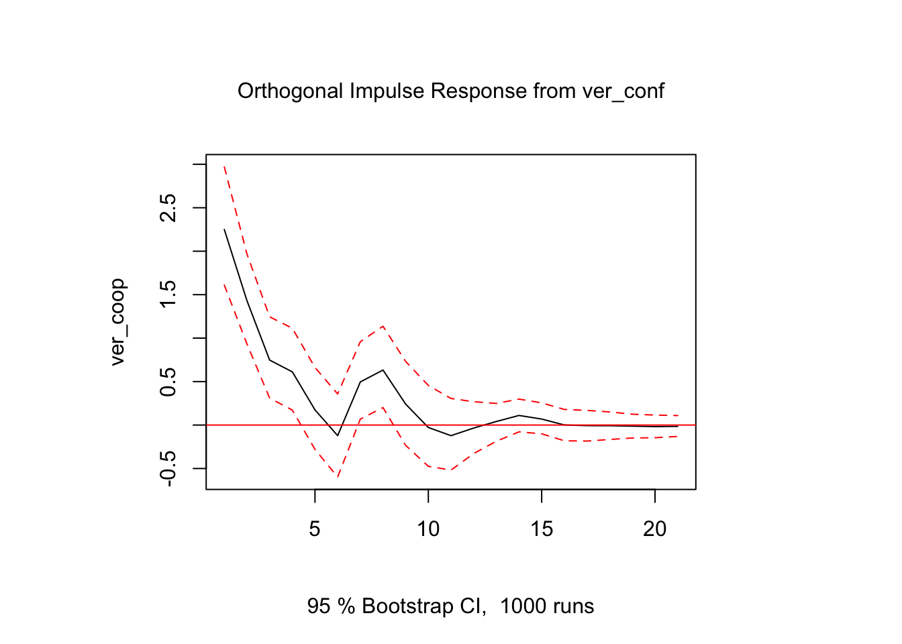
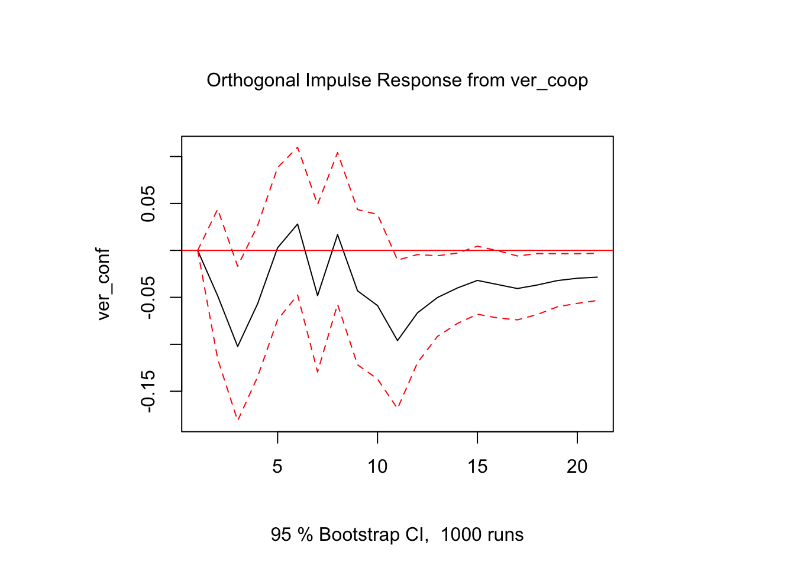
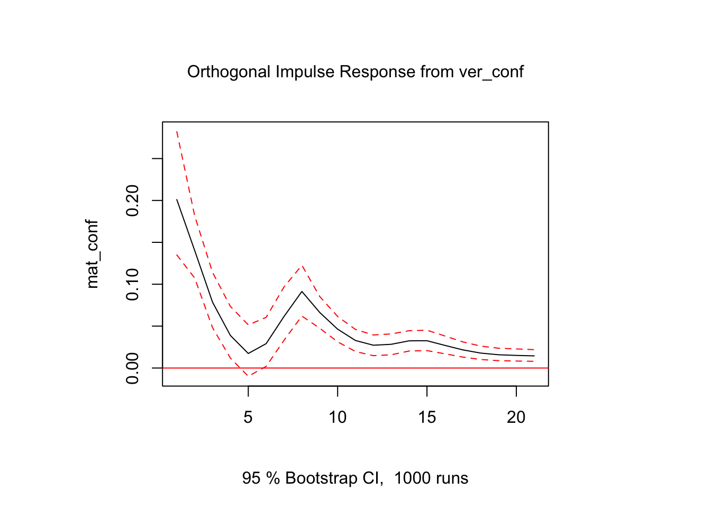
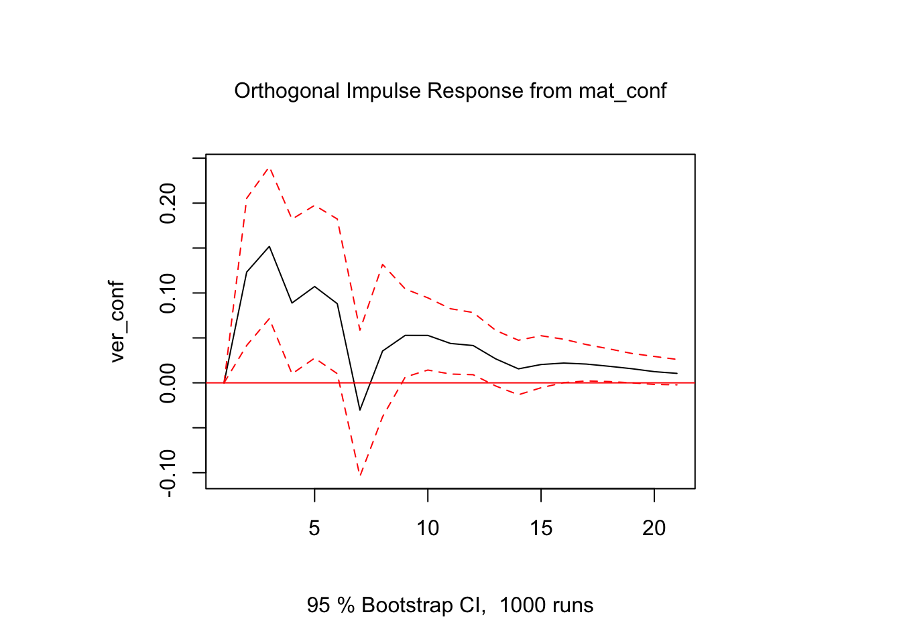
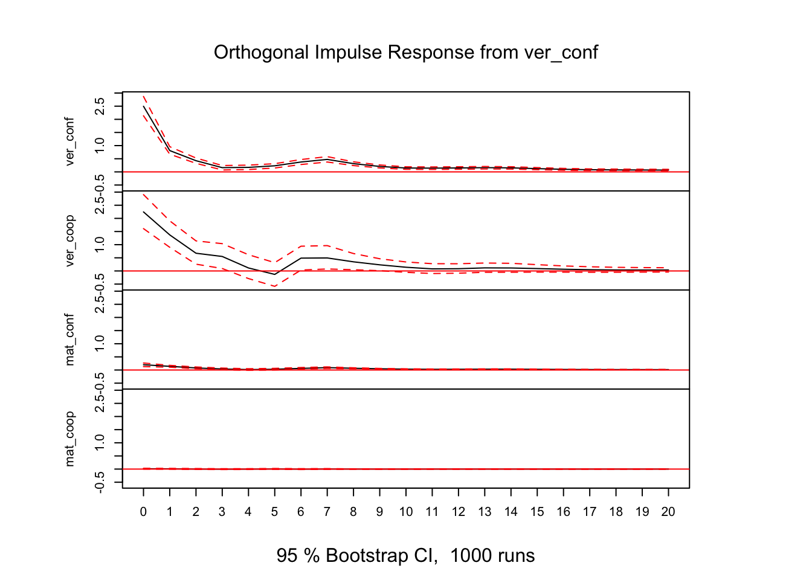

4 Vector Autoregression
- Model 1:
verbal conflictandverbal cooperation - Model 2:
verbal conflictandmaterial conflict - Model 3:
verbal conflict,verbal cooperation,verbal conflictandmaterial conflict
library(vars)## Loading required package: MASS##
## Attaching package: 'MASS'## The following object is masked from 'package:dplyr':
##
## select## Loading required package: strucchange## Loading required package: sandwich## Loading required package: lmtest## Warning: package 'lmtest' was built under R version 3.3.2VARselect(ritualized_day %>% dplyr::select(ver_conf, ver_coop),
lag.max = 20, type="both")## $selection
## AIC(n) HQ(n) SC(n) FPE(n)
## 10 7 7 10
##
## $criteria
## 1 2 3 4 5
## AIC(n) 7.178617 7.168743 7.162801 7.154803 7.143807
## HQ(n) 7.183158 7.175555 7.171883 7.166156 7.157430
## SC(n) 7.191415 7.187941 7.188397 7.186799 7.182202
## FPE(n) 1311.093232 1298.212169 1290.520115 1280.240422 1266.239681
## 6 7 8 9 10
## AIC(n) 7.129605 7.122142 7.122867 7.123004 7.119988
## HQ(n) 7.145499 7.140306 7.143302 7.145710 7.144965
## SC(n) 7.174399 7.173335 7.180459 7.186996 7.190379
## FPE(n) 1248.384098 1239.101249 1240.000445 1240.171124 1236.436377
## 11 12 13 14 15
## AIC(n) 7.121485 7.121298 7.120632 7.121839 7.122246
## HQ(n) 7.148732 7.150816 7.152420 7.155898 7.158575
## SC(n) 7.198274 7.204487 7.210220 7.217826 7.224632
## FPE(n) 1238.287730 1238.056944 1237.232274 1238.727176 1239.231153
## 16 17 18 19 20
## AIC(n) 7.124126 7.125556 7.124049 7.124183 7.125022
## HQ(n) 7.162726 7.166426 7.167190 7.169595 7.172705
## SC(n) 7.232912 7.240740 7.245632 7.252166 7.259404
## FPE(n) 1241.563939 1243.340193 1241.468096 1241.634826 1242.677889VARselect(ritualized_day %>% dplyr::select(ver_conf, mat_conf),
lag.max = 20, type="both")## $selection
## AIC(n) HQ(n) SC(n) FPE(n)
## 7 7 7 7
##
## $criteria
## 1 2 3 4 5 6 7
## AIC(n) 1.774444 1.761401 1.755925 1.748598 1.739468 1.723506 1.714692
## HQ(n) 1.778985 1.768213 1.765007 1.759951 1.753092 1.739401 1.732857
## SC(n) 1.787242 1.780599 1.781522 1.780594 1.777863 1.768300 1.765885
## FPE(n) 5.897001 5.820588 5.788800 5.746541 5.694315 5.604145 5.554964
## 8 9 10 11 12 13 14
## AIC(n) 1.715973 1.716064 1.717385 1.718274 1.719011 1.717582 1.717250
## HQ(n) 1.736408 1.738770 1.742362 1.745521 1.748529 1.749371 1.751309
## SC(n) 1.773565 1.780055 1.787776 1.795063 1.802200 1.807170 1.813237
## FPE(n) 5.562084 5.562591 5.569947 5.574898 5.579013 5.571046 5.569195
## 15 16 17 18 19 20
## AIC(n) 1.718439 1.719825 1.721136 1.721047 1.719758 1.720633
## HQ(n) 1.754769 1.758425 1.762007 1.764189 1.765170 1.768316
## SC(n) 1.820826 1.828610 1.836320 1.842631 1.847741 1.855015
## FPE(n) 5.575825 5.583554 5.590881 5.590388 5.583184 5.588074VARselect(ritualized_day %>% dplyr::select(ver_conf, ver_coop, mat_conf, mat_coop),
lag.max = 20, type="both")## $selection
## AIC(n) HQ(n) SC(n) FPE(n)
## 7 2 1 7
##
## $criteria
## 1 2 3 4 5 6
## AIC(n) 5.679482 5.666373 5.658727 5.651347 5.644487 5.631937
## HQ(n) 5.693105 5.689079 5.690515 5.692218 5.694440 5.690972
## SC(n) 5.717877 5.730365 5.748315 5.766532 5.785268 5.798315
## FPE(n) 292.797675 288.984551 286.783334 284.674834 282.728663 279.202602
## 7 8 9 10 11 12
## AIC(n) 5.628502 5.634105 5.635937 5.634215 5.639642 5.643119
## HQ(n) 5.696620 5.711305 5.722220 5.729580 5.744089 5.756649
## SC(n) 5.820476 5.851676 5.879105 5.902979 5.934002 5.963076
## FPE(n) 278.245309 279.808862 280.322239 279.840111 281.363060 282.343610
## 13 14 15 16 17 18
## AIC(n) 5.646170 5.649628 5.653986 5.657504 5.660722 5.661935
## HQ(n) 5.768782 5.781323 5.794763 5.807364 5.819664 5.829959
## SC(n) 5.991724 6.020779 6.050733 6.079847 6.108662 6.135471
## FPE(n) 283.206721 284.188301 285.429951 286.436450 287.360308 287.709939
## 19 20
## AIC(n) 5.664200 5.667107
## HQ(n) 5.841306 5.853297
## SC(n) 6.163332 6.191837
## FPE(n) 288.363122 289.203843model1 <- VAR(ritualized_day %>% dplyr::select(ver_conf, ver_coop), p=10, type="both")
causality(model1, cause="ver_conf") # Verbal conflict Granger-causes verbal cooperation## $Granger
##
## Granger causality H0: ver_conf do not Granger-cause ver_coop
##
## data: VAR object model1
## F-Test = 2.0254, df1 = 10, df2 = 7820, p-value = 0.02708
##
##
## $Instant
##
## H0: No instantaneous causality between: ver_conf and ver_coop
##
## data: VAR object model1
## Chi-squared = 97.333, df = 1, p-value < 2.2e-16causality(model1, cause="ver_coop")## $Granger
##
## Granger causality H0: ver_coop do not Granger-cause ver_conf
##
## data: VAR object model1
## F-Test = 1.2887, df1 = 10, df2 = 7820, p-value = 0.2303
##
##
## $Instant
##
## H0: No instantaneous causality between: ver_coop and ver_conf
##
## data: VAR object model1
## Chi-squared = 97.333, df = 1, p-value < 2.2e-16model2 <- VAR(ritualized_day %>% dplyr::select(ver_conf, mat_conf), p=7, type="both")
causality(model2, cause="ver_conf") # Feedback loop?## $Granger
##
## Granger causality H0: ver_conf do not Granger-cause mat_conf
##
## data: VAR object model2
## F-Test = 12.553, df1 = 7, df2 = 7838, p-value = 4.441e-16
##
##
## $Instant
##
## H0: No instantaneous causality between: ver_conf and mat_conf
##
## data: VAR object model2
## Chi-squared = 165.77, df = 1, p-value < 2.2e-16causality(model2, cause="mat_conf")## $Granger
##
## Granger causality H0: mat_conf do not Granger-cause ver_conf
##
## data: VAR object model2
## F-Test = 3.7752, df1 = 7, df2 = 7838, p-value = 0.0004289
##
##
## $Instant
##
## H0: No instantaneous causality between: mat_conf and ver_conf
##
## data: VAR object model2
## Chi-squared = 165.77, df = 1, p-value < 2.2e-16model3 <- VAR(ritualized_day %>% dplyr::select(ver_conf, ver_coop, mat_conf, mat_coop),
p=7, type="both")
causality(model3, cause="ver_conf") # Feedback loop?## $Granger
##
## Granger causality H0: ver_conf do not Granger-cause ver_coop
## mat_conf mat_coop
##
## data: VAR object model3
## F-Test = 4.9195, df1 = 21, df2 = 15620, p-value = 8.364e-13
##
##
## $Instant
##
## H0: No instantaneous causality between: ver_conf and ver_coop
## mat_conf mat_coop
##
## data: VAR object model3
## Chi-squared = 229.34, df = 3, p-value < 2.2e-164.1 IRF Model 1
irf_model1 <- irf(model1, impulse = "ver_conf", response = "ver_coop",
boot=TRUE, runs=1000, n.ahead=20)
irf_model1.5 <- irf(model1, impulse = "ver_coop", response = "ver_conf",
boot=TRUE, runs=1000, n.ahead=20)
plot(irf_model1)
plot(irf_model1.5)
4.2 IRF Model 2
irf_model2 <- irf(model2, impulse = "ver_conf", response = c("mat_conf"),
boot=TRUE, runs=1000, n.ahead=20)
irf_model2.5 <- irf(model2, impulse = "mat_conf", response = c("ver_conf"),
boot=TRUE, runs=1000, n.ahead=20)
par(mfrow=c(1,2))
plot(irf_model2)
plot(irf_model2.5)
4.3 4.1.3 IRF Model 3
irf_model3 <- irf(model3, impulse = "ver_conf",
response = c("ver_conf", "ver_coop", "mat_conf", "mat_coop"),
boot=TRUE, runs=1000, n.ahead=20)
plot(irf_model3)